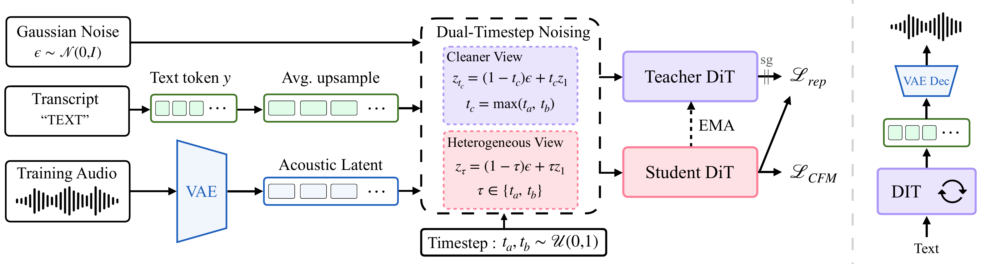
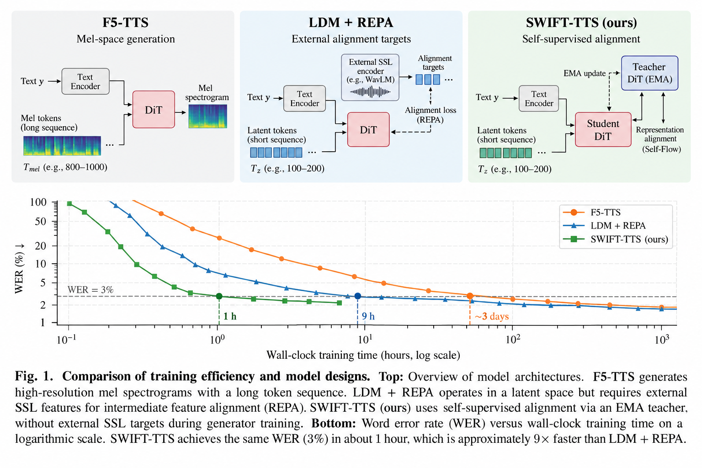
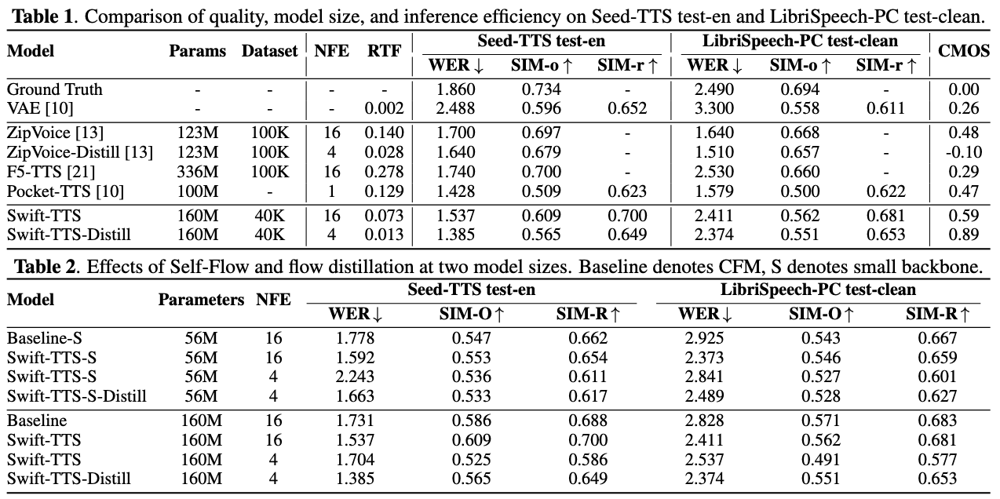

Abstract
The framework
Model Overview


Experiments
Results
Speech quality, model size, and inference efficiency, followed by the effects of Self-Flow and flow distillation.

Audio comparison · 01
Swift-TTS
Five selected examples from Seed-TTS test-en. Each row compares the same target text across systems; the reference audio is the speaker prompt.
Sample selection and inference settings
For each of Swift-TTS and Swift-TTS-Distill, we rank the 20 Gradio listening-study utterances by UTMOS and SIM-O separately, then select the five lowest sums of the two ranks. Both metrics have equal weight. Rank-sum ties are resolved by higher UTMOS, then utterance ID. The two selections may overlap.
The original 20-utterance pool was selected by Swift-TTS UTMOS. These are selected listening examples. The scores beside each target text belong to the featured Swift model in that section.
Swift-TTS: Base 600K, 16 steps, temperature 0.5. Swift-TTS-Distill: Base flow-only 60K, 4 steps, temperature 0.5. ZipVoice and F5-TTS use 16 steps and temperature 1.0. Reconstruction is the target recording encoded and decoded by the Pocket continuous VAE. Audio files are the existing Gradio playback files.
Download sample scores (TSV)Compare the players across each row. On smaller screens, scroll the table horizontally.
Audio comparison · 02
Swift-TTS-Distill
Five examples selected independently using the distilled model’s UTMOS and SIM-O scores, with the same comparison systems and reference prompts.
Compare the players across each row. On smaller screens, scroll the table horizontally.